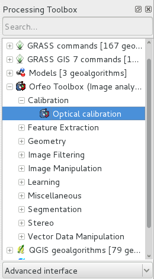

OTB Quickstart¶
DIE ORFEO Toolbox Library (OTB) ist eine Hochleistungsbibliothek für die Bildverarbeitung im Bereich der Fernerkundung.
Diese Kurzanleitung beschreibt:
- Abrufen von Metadateninformationen zu Bildern
- Durchführen mathematischer Operationen zwischen Bildkanalen
- Öffnen Sie Rasterbilder mit der Anwendung monteverdi. Führen Sie Segmentierung (mean-shift clustering) durch und visualisieren Sie das Ergebnis
- Durchführen einer überwachten Klassifizierung basierend auf dem Support Vector Machine-Algorithmus
Die OTB-Anwendungen bieten viele interessante Werkzeuge, die die Manipulation von Bildern erleichtern. Alle diese Werkzeuge sind verfügbar über:
- CLI (command line interface). Alle Anwendungen können von einem Terminal aus aufgerufen werden, beginnend mit otbcli_ plus dem Anwendungsnamen.
- GUI (eine eigenständige grafische Benutzeroberfläche in Qt). Die Anwendungen können von einem Terminal mit dem Alias otbgui_ plus dem Anwendungsnamen aufgerufen werden. Eine weitere Möglichkeit ist die Verwendung eines Launchers (verfügbar in der ).
- QGIS-Plugin - verfügbar über das Verarbeitungsframework (processing framework).
- Beispieldaten, die in diesem Schnellstart verwendet werden, finden Sie unter:
- /home/user/data/north_carolina/rast_geotiff
Start a Terminal Emulator (LXTerminal currently) from the Applications menu in the Accessories section. This gives you a Unix shell command prompt. Go to the data directory.
cd /home/user/data/north_carolina/rast_geotiff
Contents
Abrufen von Metadateninformationen zu Bildern¶
Sie können alle Metadateninformationen, die in einem Bild enthalten sind, mit dem Befehl otbcli_ReadImageInfo abrufen. Der eindeutige Parameter ist der Name der Eingabebilddatei, z. B.:
otbcli_ReadImageInfo -in ortho_2001_t792_1m.tif
Rechner auf Bildkanälen¶
Die otbcli_otbBandMath bietet eine effiziente Möglichkeit, mathematische Operationen an Bildkanälen durchzuführen. Die Syntax ist ganz einfach. Beispielsweile können Sie zwei Kanäle subtrahieren und so die Unterschiede zweier Bilder ermitteln Vergleich lsat7_2002_10.tif und lsat7_2002_20.tif:
otbcli_BandMath -il lsat7_2002_10.tif lsat7_2002_20.tif -out ~/difference.tif -exp "im1b1-im2b1"
Die Anwendung ist in der Lage, komplexe mathematische Operationen über Bilder (Schwellenwert, logarithmische Neuskalierung, etc.) durchzuführen. Dieser hausgemachte digitale Rechner ist auch mit benutzerdefinierten Funktionen ausgestattet, mit denen Sie einen vollständigen Ausdruck berechnen können. Wenn z. B. Fernerkundungsbilder physikalische Werte messen, ist es möglich, mehrere Indizes mit physikalischer Bedeutung wie den NDVI (Normalized Difference Vegetation Index) für die Vegetation zu extrahieren. Mit dem Rechner können Sie den NDVI auf einem multispektralen Sensor Bild berechnen, indem Sie:
otbcli_BandMath -il lsat7_2002_30.tif lsat7_2002_40.tif -out ~/ndvi.tif -exp "ndvi(im1b1,im2b1)"
Die Datei lsat7_2002_30.tif entspricht dem Landsat 7 Rot-Kanal, lsat7_2002_40.tif entspricht dem Nahinfrarot.
Sie können dann Eingabebilder und das Ergebnis mit dem folgenden Befehl visualisieren
monteverdi lsat7_2002_30.tif lsat7_2002_40.tif ~/ndvi.tif
Pixelbasierte Klassifizierung¶
Die Klassifizierung im Anwendungsframework bietet eine überwachte pixelweise Klassifizierungskette, die auf dem Lernen aus mehreren Bildern und der Verwendung einer bestimmten machine learning-Methode wie SVM, Bayes, KNN, Random Forests, Artificial Neural Network und anderen basiert. Weitere Informationen zu allen verfügbaren Klassifikatoren finden Sie in der Anwendungshilfe von TrainImagesClassifier. Es unterstützt riesige Bilder durch Streaming und Multi-Threading. Die Klassifizierungskette führt einen Trainingsschritt basierend auf den Intensitäten jedes Pixels als Features durch. Bitte beachten Sie, dass alle Eingabebilder die gleiche Anzahl von Bändern haben müssen, um vergleichbar zu sein.
Um diese Anwendung anzuschauen, können Sie den Befehl verwenden:
otbgui_TrainImagesClassifier
Segmentierung durchführen¶
Die OTB Segmentation-Anwendung ermöglicht es, eine Raster-Segmentierungsausgabe mit verschiedenen Algorithmen zu erzeugen und auf große Raster zu skalieren, indem Vektorausgaben erzeugt werden, die Sie in eine GIS-Software importieren können. In der Anwendung stehen vier Segmentierungsmethoden zur Verfügung:
- Mean-Shift
- Watershed (ITK-Implementierung)
- Connected-Components
- Morphologische Profile
Sie können die Segmentierung mit folgenden Befehlen testen:
- Erstellung eines Mehrkanal-rot-grün-blau-nir-Bildes
otbcli_ConcatenateImages -il lsat7_2002_30.tif lsat7_2002_20.tif lsat7_2002_10.tif lsat7_2002_40.tif -out ~/lsat7_rgbn.tif
- Segmentierung anwenden
otbcli_Segmentation -in ~/lsat7_rgbn.tif -filter meanshift -mode raster -mode.raster.out ~/segmentation.tif
- Generieren von Farben anstelle von Beschriftungen
otbcli_ColorMapping -in ~/segmentation.tif -out ~/segmentation_colored.tif -method image -method.image.in ~/lsat7_rgbn.tif
Darüber hinaus kann die Anwendung in zwei verschiedenen Modi arbeiten:
Rastermodus: Ermöglicht das Segmentieren eines kleinen Bildes und erzeugt ein Raster, bei dem jede Komponente der Segmentierung mit einer eindeutigen Ganzzahl beschriftet ist.
Vektormodus: Segmentieren Sie größere Bilder und erzeugen Sie eine Vektordatei, in der jedes Segment der Segmentierung durch ein Polygon dargestellt wird

OTB enthält auch ein Framework, um die kachelweise Segmentierung sehr großer Bilder mit theoretischen Garantien zu erzielen, die identische Ergebnisse mit denen ohne Kacheln, die als LSMS bezeichnet werden, zu erzielen.
OTB in QGis¶
Die selben OTB-Anwendungen können auch aus dem Menü in QGis verwendet werden. Die Anwendungen sind nach Tags sortiert.

Entwicklung mit OTB¶
Wenn Sie die OTB-Bibliothek verwenden und Ihren C++-Code in OSGeoLive kompilieren möchten, müssen Sie:
- Installieren Sie das Entwicklungspaket libotb-dev und libqt4-dev .
- Überprüfen Sie, ob cmake installiert ist.
Der OTB_DIR Speicherort sollte automatisch gefunden werden (normalerweise in /usr/lib/x86_64-linux-gnu/cmake/OTB-…). In Ihrer CMake-Konfiguration sollten Sie auf die Bibliotheken in der Variablen OTB_LIBRARIES verweisen.
Weitere Informationen finden Sie im Software-Handbuch.
Was kommt als Nächstes?¶
OTB-Softwarehandbuch
Die wichtigste Informationsquelle ist der OTB Software Guide. Dies ist eine umfassende Anleitung, die etwa 600 Seiten umfasst, die die Schritte zur Installation und Verwendung von OTB detailliert beschreibt. Die meisten der verfügbaren Beschreibungen sind stark mit Ergebnissen aus der realen Fernerkundungsverarbeitung illustriert.
OTB Kochbuch
Ein Leitfaden für OTB-Anwendungen und Monteverdi für Nicht-Entwickler ist ebenfalls verfügbar. Dieser Leitfaden besteht aus einem kurzen Rundgang durch OTB-Anwendungen und Monteverdi, gefolgt von einer Reihe von Beispielen, um die üblichen Fernerkundungsaufgaben mit beiden Werkzeugen durchzuführen.
OTB Tutorials
Folgen Sie den tutorials, um mehr über OTB zu erfahren.
OTB-Anwendungs-Dokumentation
Siehe auch die ausführliche Dokumentation zu OTB applications
OTB-Kurse mit Pleiades-Bildern zum Erlernen von OTB-Anwendungen und Monteverdi
Folgen Sie dem courses, um mehr über OTB zu erfahren (siehe Abschnitt Tutorials).